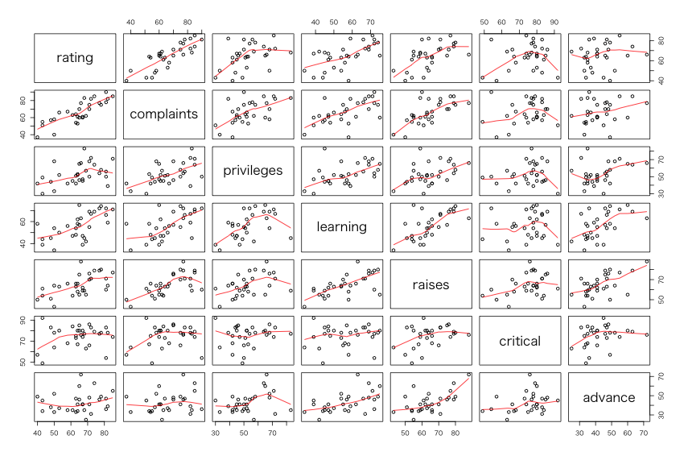
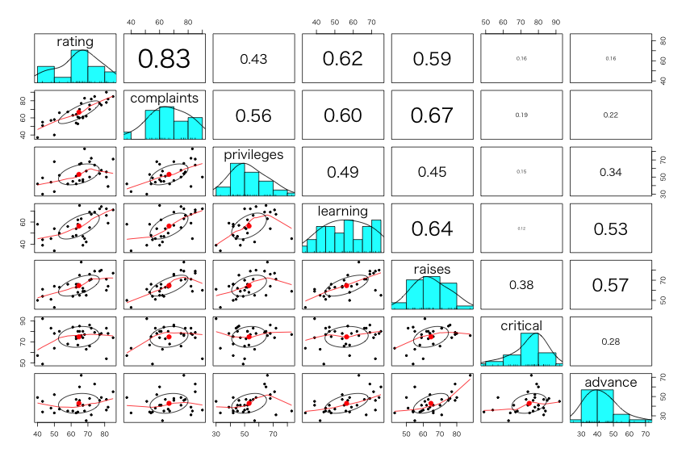
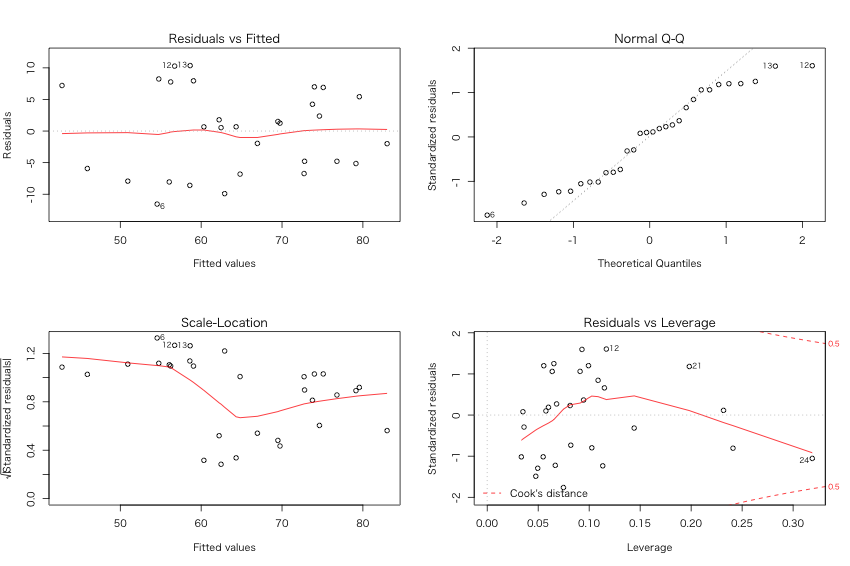
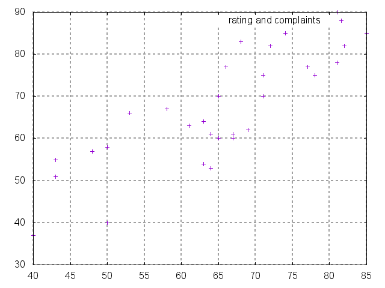

Emacs Lisp Stat - data(attitude)
目次
1 Abstract
- http://sugano-nu.github.io/emacs-lisp-stat-attitude/
- R and Emacs Lisp for Data Analysis
- R is Domain Specific Language for data analysis.
- Emacs Lisp is so much flexible.
- References
2 R: DSL for Statistical Data Analysis
2.1 attitude data in R
help(attitude)
The Chatterjee-Price Attitude Data
Description:
From a survey of the clerical employees of a large financial
organization, the data are aggregated from the questionnaires of
the approximately 35 employees for each of 30 (randomly selected)
departments. The numbers give the percent proportion of
favourable responses to seven questions in each department.
Usage:
attitude
Format:
A data frame with 30 observations on 7 variables. The first column
are the short names from the reference, the second one the
variable names in the data frame:
Y rating numeric Overall rating
X[1] complaints numeric Handling of employee complaints
X[2] privileges numeric Does not allow special privileges
X[3] learning numeric Opportunity to learn
X[4] raises numeric Raises based on performance
X[5] critical numeric Too critical
X[6] advancel numeric Advancement
Source:
Chatterjee, S. and Price, B. (1977) _Regression Analysis by
Example_. New York: Wiley. (Section 3.7, p.68ff of 2nd
ed.(1991).)
Examples:
require(stats); require(graphics)
pairs(attitude, main = "attitude data")
summary(attitude)
summary(fm1 <- lm(rating ~ ., data = attitude))
opar <- par(mfrow = c(2, 2), oma = c(0, 0, 1.1, 0),
mar = c(4.1, 4.1, 2.1, 1.1))
plot(fm1)
summary(fm2 <- lm(rating ~ complaints, data = attitude))
plot(fm2)
par(opar)
data(attitude) attitude[1:5, ]
| rating | complaints | privileges | learning | raises | critical | advance | |
|---|---|---|---|---|---|---|---|
| 1 | 43 | 51 | 30 | 39 | 61 | 92 | 45 |
| 2 | 63 | 64 | 51 | 54 | 63 | 73 | 47 |
| 3 | 71 | 70 | 68 | 69 | 76 | 86 | 48 |
| 4 | 61 | 63 | 45 | 47 | 54 | 84 | 35 |
| 5 | 81 | 78 | 56 | 66 | 71 | 83 | 47 |
Here are the correlations.
round(cor(attitude),2)
| rating | complaints | privileges | learning | raises | critical | advance | |
|---|---|---|---|---|---|---|---|
| rating | 1 | 0.83 | 0.43 | 0.62 | 0.59 | 0.16 | 0.16 |
| complaints | 0.83 | 1 | 0.56 | 0.6 | 0.67 | 0.19 | 0.22 |
| privileges | 0.43 | 0.56 | 1 | 0.49 | 0.45 | 0.15 | 0.34 |
| learning | 0.62 | 0.6 | 0.49 | 1 | 0.64 | 0.12 | 0.53 |
| raises | 0.59 | 0.67 | 0.45 | 0.64 | 1 | 0.38 | 0.57 |
| critical | 0.16 | 0.19 | 0.15 | 0.12 | 0.38 | 1 | 0.28 |
| advance | 0.16 | 0.22 | 0.34 | 0.53 | 0.57 | 0.28 | 1 |
2.2 scatterplot by pairs()
par(family = "HiraKakuProN-W3") ## ← Windowsでは実行しない pairs(attitude, panel = panel.smooth, names(attitude))

図1: emacs-lisp-stat-attitude-R-pairs-01
2.3 Scatterplot by pairs.panels()
par(family = "HiraKakuProN-W3") ## ← Windowsでは実行しない library(psych) pairs.panels(attitude, scale = TRUE)

図2: emacs-lisp-stat-attitude-R-pairs-panels-01
2.4 Regression Analysis by lm()
attitude.lm1 <- lm(rating ~ ., data = attitude)
summary(attitude.lm1)
Call:
lm(formula = rating ~ ., data = attitude)
Residuals:
Min 1Q Median 3Q Max
-10.9418 -4.3555 0.3158 5.5425 11.5990
Coefficients:
Estimate Std. Error t value Pr(>|t|)
(Intercept) 10.78708 11.58926 0.931 0.361634
complaints 0.61319 0.16098 3.809 0.000903 ***
privileges -0.07305 0.13572 -0.538 0.595594
learning 0.32033 0.16852 1.901 0.069925 .
raises 0.08173 0.22148 0.369 0.715480
critical 0.03838 0.14700 0.261 0.796334
advance -0.21706 0.17821 -1.218 0.235577
---
Signif. codes: 0 ‘***’ 0.001 ‘**’ 0.01 ‘*’ 0.05 ‘.’ 0.1 ‘ ’ 1
Residual standard error: 7.068 on 23 degrees of freedom
Multiple R-squared: 0.7326, Adjusted R-squared: 0.6628
F-statistic: 10.5 on 6 and 23 DF, p-value: 0.0000124
2.5 Variable Selection
attitude.lm2 <- step(attitude.lm1)
Start: AIC=123.36
rating ~ complaints + privileges + learning + raises + critical +
advance
Df Sum of Sq RSS AIC
- critical 1 3.41 1152.4 121.45
- raises 1 6.80 1155.8 121.54
- privileges 1 14.47 1163.5 121.74
- advance 1 74.11 1223.1 123.24
<none> 1149.0 123.36
- learning 1 180.50 1329.5 125.74
- complaints 1 724.80 1873.8 136.04
Step: AIC=121.45
rating ~ complaints + privileges + learning + raises + advance
Df Sum of Sq RSS AIC
- raises 1 10.61 1163.0 119.73
- privileges 1 14.16 1166.6 119.82
- advance 1 71.27 1223.7 121.25
<none> 1152.4 121.45
- learning 1 177.74 1330.1 123.75
- complaints 1 724.70 1877.1 134.09
Step: AIC=119.73
rating ~ complaints + privileges + learning + advance
Df Sum of Sq RSS AIC
- privileges 1 16.10 1179.1 118.14
- advance 1 61.60 1224.6 119.28
<none> 1163.0 119.73
- learning 1 197.03 1360.0 122.42
- complaints 1 1165.94 2328.9 138.56
Step: AIC=118.14
rating ~ complaints + learning + advance
Df Sum of Sq RSS AIC
- advance 1 75.54 1254.7 118.00
<none> 1179.1 118.14
- learning 1 186.12 1365.2 120.54
- complaints 1 1259.91 2439.0 137.94
Step: AIC=118
rating ~ complaints + learning
Df Sum of Sq RSS AIC
<none> 1254.7 118.00
- learning 1 114.73 1369.4 118.63
- complaints 1 1370.91 2625.6 138.16
2.6 Results of Regression Analysis
summary(attitude.lm2)
Call:
lm(formula = rating ~ complaints + learning, data = attitude)
Residuals:
Min 1Q Median 3Q Max
-11.5568 -5.7331 0.6701 6.5341 10.3610
Coefficients:
Estimate Std. Error t value Pr(>|t|)
(Intercept) 9.8709 7.0612 1.398 0.174
complaints 0.6435 0.1185 5.432 0.00000957 ***
learning 0.2112 0.1344 1.571 0.128
---
Signif. codes: 0 ‘***’ 0.001 ‘**’ 0.01 ‘*’ 0.05 ‘.’ 0.1 ‘ ’ 1
Residual standard error: 6.817 on 27 degrees of freedom
Multiple R-squared: 0.708, Adjusted R-squared: 0.6864
F-statistic: 32.74 on 2 and 27 DF, p-value: 0.00000006058
Regression Equation is:
rating = 9.8709 + 0.6435 × complaints + 0.2112 × earning
2.7 Regression Diagnosis
par(family = "HiraKakuProN-W3") ## ← Windowsでは実行しない par(mfrow = c(2, 2)) plot(attitude.lm2)

図3: emacs-lisp-stat-attitude-R-plot-lm
3 Emacs Lisp: It's a LISP.
3.1 Making CSV Data
-rw-r--r--@ 1 sugano staff 850 2 3 19:59 attitude.csv
31 31 850 attitude.csv
3.2 list of attitude
(setq dd
(with-temp-buffer
(org-table-import (expand-file-name file) nil)
(org-table-to-lisp)))
(setq LIST-VAR (car dd))
(setq dd (cdr dd))
3.3 variable list
LIST-VAR
| rating | complaints | privileges | learning | raises | critical | advance |
3.4 Data
- first line of data
(car dd)
("1" "43" "51" "30" "39" "61" "92" "45")
- last line of data
(car (reverse dd))
("30" "82" "82" "39" "59" "64" "78" "39")
3.5 Emacs Lisp Stat Function
(require 'cl-lib) (require 'calc) (defun els-mean (N LIST-OF-DATA) "Calculate an arithmetic mean of N th column of LIST-OF-DATA. The first column is 0 th." (setq LIST (mapcar* #'(lambda (x) (nth N x)) LIST-OF-DATA)) (string-to-number (math-format-number (calcFunc-vmean (cons 'vec (mapcar* #'(lambda (X) (math-read-number X)) LIST)))))) (defun els-varp (N LIST-OF-DATA) "Calculate a population variance of N th column of LIST-OF-DATA. The first column is 0 th." (setq LIST (mapcar* #'(lambda (x) (nth N x)) LIST-OF-DATA)) (string-to-number (math-format-number (calcFunc-vpvar (cons 'vec (mapcar* #'(lambda (X) (math-read-number X)) LIST)))))) (defun els-var (N LIST-OF-DATA) "Calculate an unbiased variance of N th column of LIST-OF-DATA. The first column is 0 th." (setq LIST (mapcar* #'(lambda (x) (nth N x)) LIST-OF-DATA)) (string-to-number (math-format-number (calcFunc-vvar (cons 'vec (mapcar* #'(lambda (X) (math-read-number X)) LIST)))))) (defun els-sd (N LIST-OF-DATA) "Calculate an unbiased standard deviation of N th column of LIST-OF-DATA. The first column is 0 th." (setq LIST (mapcar* #'(lambda (x) (nth N x)) LIST-OF-DATA)) (sqrt (string-to-number (math-format-number (calcFunc-vvar (cons 'vec (mapcar* #'(lambda (X) (math-read-number X)) LIST))))))) (defun els-cor (N1 N2 LIST-OF-DATA) "Calculate a correlation of coefficient of N1 and N2 th column of LIST-OF-DATA. The first column is 0 th." (setq LISTX (mapcar* #'(lambda (x) (nth N1 x)) LIST-OF-DATA)) (setq LISTY (mapcar* #'(lambda (y) (nth N2 y)) LIST-OF-DATA)) (string-to-number (math-format-number (calcFunc-vcorr (cons 'vec (mapcar* #'(lambda (X) (math-read-number X)) LISTX)) (cons 'vec (mapcar* #'(lambda (Y) (math-read-number Y)) LISTY)))))) (defun els-cov (N1 N2 LIST-OF-DATA) "Calculate a covariance of N1 and N2 th column of LIST-OF-DATA. The first column is 0 th." (setq LISTX (mapcar* #'(lambda (x) (nth N1 x)) LIST-OF-DATA)) (setq LISTY (mapcar* #'(lambda (y) (nth N2 y)) LIST-OF-DATA)) (string-to-number (math-format-number (calcFunc-vcov (cons 'vec (mapcar* #'(lambda (X) (math-read-number X)) LISTX)) (cons 'vec (mapcar* #'(lambda (Y) (math-read-number Y)) LISTY)))))) (defun els-round (VALUE N) "Rounds the numeric value to the specified number of decimal places." (/ (* 1.0 (round (* VALUE (expt 10 N)))) (expt 10 N)))
els-round
3.6 Mean
LIST-VAR
("" "rating" "complaints" "privileges" "learning" "raises" "critical" "advance")
(els-mean 1 dd)
64.6333333333
3.7 Multiple Means: Programming with Emacs Lisp
I had to struggle for a while to get the same result as in R.
List data structure use here in Emacs Lisp is very simple for the moment.
- No variable labels.
- No factor or value labels.
(number-sequence 1 7)
(1 2 3 4 5 6 7)
(mapcar* #'(lambda (N) (els-mean N dd)) (number-sequence 1 7))
(64.6333333333 66.6 53.1333333333 56.3666666667 64.6333333333 74.7666666667 42.9333333333)
(mapcar* #'(lambda (N) (els-round (els-mean N dd) 2)) (number-sequence 1 7))
| 64.63 | 66.6 | 53.13 | 56.37 | 64.63 | 74.77 | 42.93 |
- Means with Title of Variable Names
(list (cdr LIST-VAR) 'hline (mapcar* #'(lambda (N) (els-round (els-mean N dd) 2)) (number-sequence 1 7)))
| rating | complaints | privileges | learning | raises | critical | advance |
|---|---|---|---|---|---|---|
| 64.63 | 66.6 | 53.13 | 56.37 | 64.63 | 74.77 | 42.93 |
3.8 Multiple Means: Just too easy for R
Ah, everything is so easy in R environment.
t(round(colMeans(attitude), 2))
| rating | complaints | privileges | learning | raises | critical | advance |
|---|---|---|---|---|---|---|
| 64.63 | 66.6 | 53.13 | 56.37 | 64.63 | 74.77 | 42.93 |
4 GNUPLOT
'((0 0.1) (0.1 1) (0.5 10)))
| 0 | 0.1 |
| 0.1 | 1 |
| 0.5 | 10 |
(defun transpose (a) (apply #'mapcar* #'list a))
transpose
(transpose (list (second (transpose dd)) (third (transpose dd))))
| 43 | 51 |
| 63 | 64 |
| 71 | 70 |
| 61 | 63 |
| 81 | 78 |
| 43 | 55 |
| 58 | 67 |
| 71 | 75 |
| 72 | 82 |
| 67 | 61 |
| 64 | 53 |
| 67 | 60 |
| 69 | 62 |
| 68 | 83 |
| 77 | 77 |
| 81 | 90 |
| 74 | 85 |
| 65 | 60 |
| 65 | 70 |
| 50 | 58 |
| 50 | 40 |
| 64 | 61 |
| 53 | 66 |
| 40 | 37 |
| 63 | 54 |
| 66 | 77 |
| 78 | 75 |
| 48 | 57 |
| 85 | 85 |
| 82 | 82 |
| 43 | 51 |
| 63 | 64 |
| 71 | 70 |
| 61 | 63 |
| 81 | 78 |
| 43 | 55 |
| 58 | 67 |
| 71 | 75 |
| 72 | 82 |
| 67 | 61 |
| 64 | 53 |
| 67 | 60 |
| 69 | 62 |
| 68 | 83 |
| 77 | 77 |
| 81 | 90 |
| 74 | 85 |
| 65 | 60 |
| 65 | 70 |
| 50 | 58 |
| 50 | 40 |
| 64 | 61 |
| 53 | 66 |
| 40 | 37 |
| 63 | 54 |
| 66 | 77 |
| 78 | 75 |
| 48 | 57 |
| 85 | 85 |
| 82 | 82 |
LIST-VAR
("" "rating" "complaints" "privileges" "learning" "raises" "critical" "advance")
set grid lw 2 plot data w p title "rating and complaints"

図4: emacs-lisp-stat-attitude-gnuplot-01
5 Conclusion for the Moment
I had to realize that:
- What on the earth why R is so well built!
- How easy it is to anlayze data with R.
But ONE MORE THING:
- Even for a Sunday programmer, How flexible Emacs Lisp is!